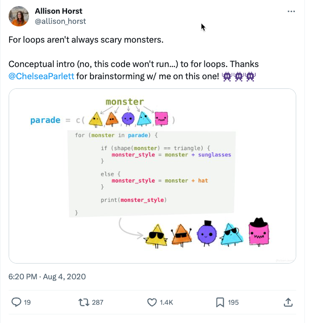

7 A gentle intro to programming
No one is born knowing how to code. It takes practice, and the most effective motivator is need: You have a story that depends on it. That said, knowing a little vocabulary will help when you get started. Once you learn to program in one language, learning others is much simpler. That’s because you have the basic concepts down: How to assign values to variables, how to loop through lists, or how to import data. This chapter walks through some of the more universal concepts in programming.
7.1 Building blocks
Variables
A variable is a container with a name. You pour things into the container Sometimes, those things are simple like your name. Sometimes they’re quite complex, such as the contents of a Spotify playlist. In R, many people use the terms variable and object interchangeably.1
The three most common structures of variables are:
Literals
The most basic kind of object is a single variable that contains a single value of a specific type:
"Sarah"(text)1.0(number)true(logical)2017-01-24. (date)
These are called “literals”. When you want to use the actual letters of some text, enclose them in quotes. When you want to use the named variable, don’t enclose it in quotes: my_name <- "Sarah"
Lists or vectors
Most languages have some concept of a list of items called an array, vector or dictionary. In R, you create a vector using the “c” operator, short for “combine”. Once you have your items in a list or a vector, you can apply the same function across all of them or work on them in order. :
c(1, 17, 2, 120, 4)c("Sarah", "Richard", "Rachel")
Data frames
A data frame is the R equivalent of a spreadsheet page. It’s tabular, rectangular data with columns and rows. You don’t need to know much about this yet, but just understand that it will become an important part of your vocabulary.
Operators & assignment
Operators are simple arithmetic or similar operations, like adding, subtracting, dividing and multiplying. Some common operators are:
| Operator | What it does |
|---|---|
| Arithmetic | |
+ |
Add |
- |
Subtract |
* |
Multiply |
/ |
Divide |
| Comparison (in R) | |
== |
Equal - Notice the TWO equal signs |
> |
Greater than (or >= greater than or equal to) |
< |
Less than (or <= less than or equal to) |
!= |
Not equal to |
| Assignment | |
<- or = |
Push a value in to a variable name. In R, most people assign a value to a variable using the <- operator, and save = to provide information to functions. There are a lot of ways to think of this – Some might call it “naming a value”, and others might say it’s “setting a variable”. Visualizing the <- arrow pushing something into a variable name can sometimes help. |
Functions
A function is a verb or a set of instructions wrapped up into a single word. Use its name, followed by some parentheses. If it requires information from you, those arguments go inside the parentheses.
If you think of it as a sentence, the function is the verb, and the arguments are the nouns and adjectives. It genearally takes the form:
function ( data, option_name="value")
Many of the functions we use are already built into R, or are in libraries that we borrow – someone else has already written, tested and packaged them up for you.
Examples include:
- importing text or Excel data
- calculating the average or sum
- counting
- finding phrases within text
Some functions work only with numbers; others work only with text or dates or some other data type.
Loops
A loop is a way to repeat your instructions over and over without having to re-write them every time. They usually work by stepping through some kind of a list, like a directory of files, or by using a counter, such as every year between 2005 and 2018.
Excel and Google Sheets don’t really have loops, unless you learn the more complicated programming language behind them. This is the motivation behind learning a programming language for a lot of people.
One type of loop commonly used in programs is a for loop, which says, “for every one of something, follow these instructions”.
See if you can follow the pseudocode of putting sunglasses or hats on monsters depending on their shape:

Common tasks that reporters do with loops include combining annual spreadsheets from a government website or downloading and importing many files at once; and scraping web pages that require clicking into each link one by one. We’ll get to this at the end of the semester.
7.2 An algorithm to make an omelet

An algorithm is a set of instructions that are carried out step by step. Brushing your teeth, making coffee or starting your car can all be expressed on algorithms if you do them the same way day after day.
Suppose you want to make an omelet. Before you even start, you need to know at least two things: which ingredients you have on hand, and what kind of omelet you want to make.
An algorithm that creates an omelet might look something like this:
- Decide what kind of omelet you want
- Check to make sure you have ingredients (and stop if you don’t)
- Prepare the fillings
- Whisk the eggs
- Melt some butter
- Pour in the eggs
- Add ingredients
- Flip the omelet
- Put it on a plate
Open a restaurant with loops
Say you saved your steps into a function called make_omelet().
You’d have to repeat this over and over if you had a restaurant. It might look like this:
- make_omelet (ingredients,kind)
- Edit the list of ingredients left and the kind for the next diner
- make_omelet (ingredients2, kind2)
- Edit your lists again
- make_omelet (ingredients3, kind3)
- . and so on.
You’d have a program hundreds of lines long – one for each customer. Instead, you could loop through the customers and do the same thing:
customers <- c("Bob", "Jamal", "Christine", "Lauren")
for each customer in the list of customers {
request what kind they want
make_omelet (ingredients_on_hand, kind_this_customer_wants)
give omelet to customer
update your ingredients list
}
7.3 More resources
- “Beyond Binary, Lesson 1 from a Google engineer’s drag queen persona named Anna Lytical. This video gives you a good handle on what a computer program does.
Statisticians usually refer to columns in a data set as “variables” – literally, something that varies. Other things in their programs are called “objects”. ↩︎